空天地一体化地质灾害防控 · 智能感知技术引领者 | 用智能感知技术，守护生命财产安全
珈蓉启睿（成都）科技有限公司深耕雷达地表成像、形变监测核心业务领域，聚焦地质灾害防控赛道，拥有国内领先的空天地一体化全链条技术解决方案，可为各类地质灾害监测防控提供专业技术支撑。
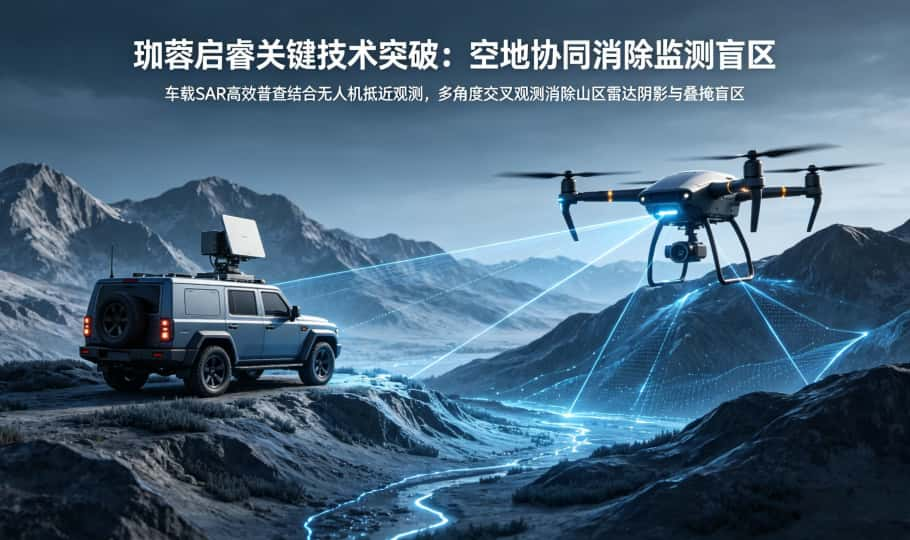
依托国内顶尖机构的学科与科研优势，将尖端遥感技术与防灾减灾实际场景深度融合。
深耕防灾减灾、应急抢险两大核心场景，拓展交通、能源、水利等基础设施智能监测。
聚焦星载、机载、地基、车载、船载多平台SAR技术的研发、集成与综合应用。
以“用智能感知技术守护生命财产安全”为使命，推动行业从“被动应对”迈向“主动智防”。
依托深厚的微波遥感、InSAR数据处理、智能算法研发技术积淀，组建由遥感、地质、软件、应急等领域专家构成的跨学科复合型人才团队。拥有自主开发的时序InSAR算法体系和软件系统，技术壁垒高，数据安全可控。
车载SAR高效普查结合无人机抵近观测，多角度交叉观测，消除山区雷达阴影与叠掩盲区。
软硬件结合，实现形变数据实时运算，监测响应高效快速。
高精度航线重访+高阶运动补偿，克服车载/机载/船载平台扰动，实现厘米至毫米级形变反演。
精准解算相位差，剔除大气、地形干扰，保障高精度形变反演。
高速图传链路，适配人员难以抵达的复杂区域监测。
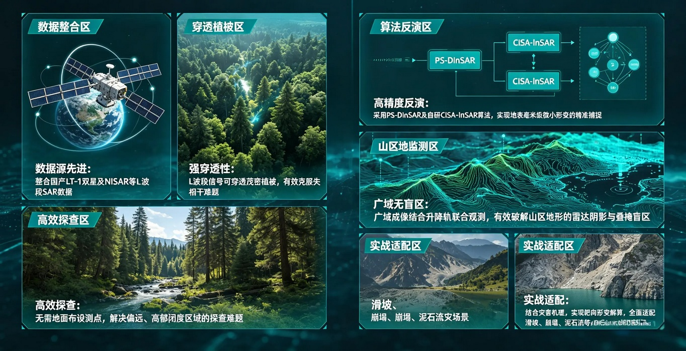
整合国产LT-1双星及NISAR等L波段SAR数据，依托L波段强穿透特性，搭配自研算法实现全域灾害监测预警。
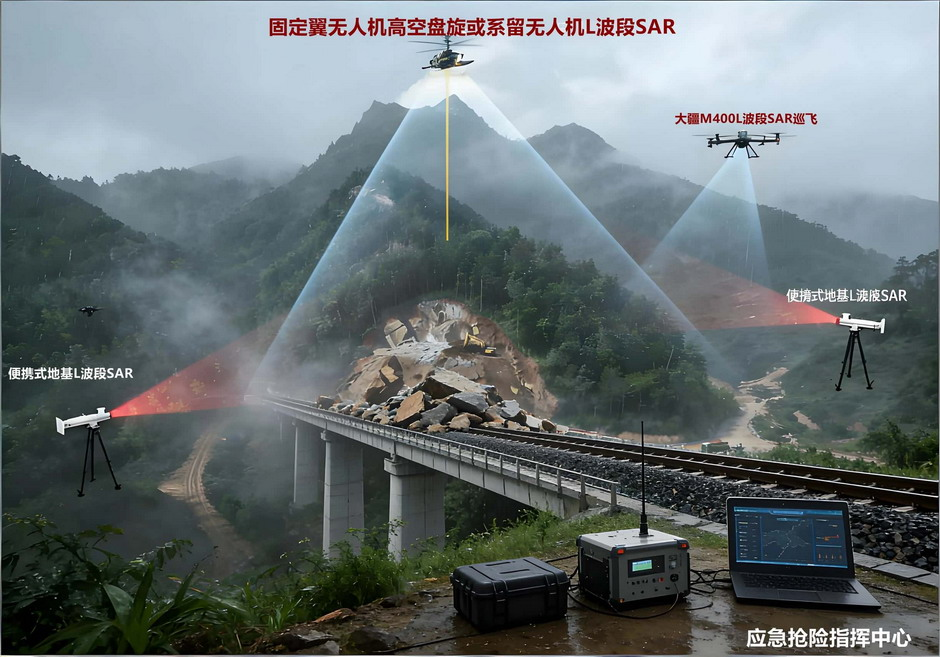
搭载L波段SAR无人机+便携式地基SAR，搭建空-地立体感知体系，全天候、全地形探测，突破光学遥感局限，支撑灾后灾情研判、二次灾害监测与抢险调度。
行业痛点：传统人工/光学巡检效率低、盲区多，植被覆盖区难以识别隐蔽病害。
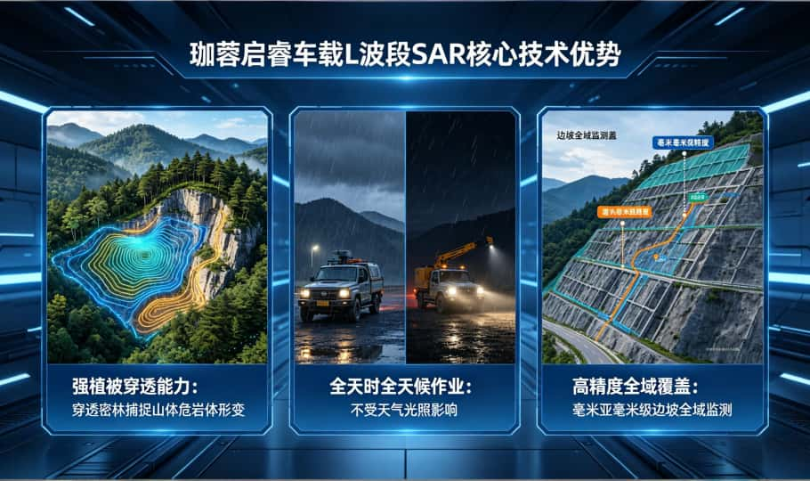
L波段雷达穿透密林，捕捉山体、危岩体微弱形变。
不受光照、雨、雪、雾影响，7×24小时常态化监测。
毫米至亚毫米级精度，全域扫描，消除巡检盲区。
拓展应用：可探测路基地下空洞、土体脱空，提前规避路面塌陷风险。
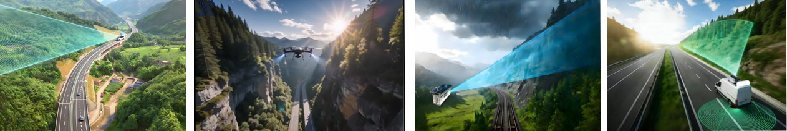
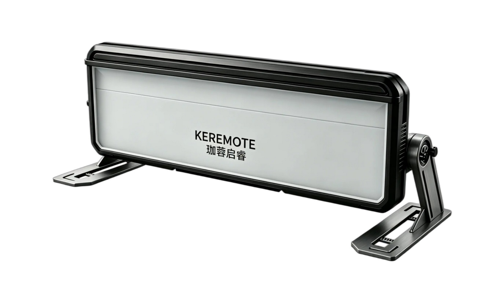
多发多收架构形变监测雷达，亚毫米级精度，适用于高陡边坡、地灾隐患点、尾矿库、应急救援等场景。
| 参数项 | 参数值 |
|---|---|
| 主机尺寸 | 最大边长小于1m |
| 重量 | ≤12kg |
| 波段 | KU |
| 形变监测距离 | ≥6km |
| 形变测量精度 | 优于0.1mm |
| 距离分辨率 | 优于0.15m |
| 数据更新率 | 优于10s/次（全距离段） |
| 单次最大扫描方位角度 | ≥120° |
| 设备总功耗 | ≤55W |
| 供电 | 12V DC/220V AC |
| 防护等级 | ≥IP66 |
| 工作温度 | -40℃～60℃ |
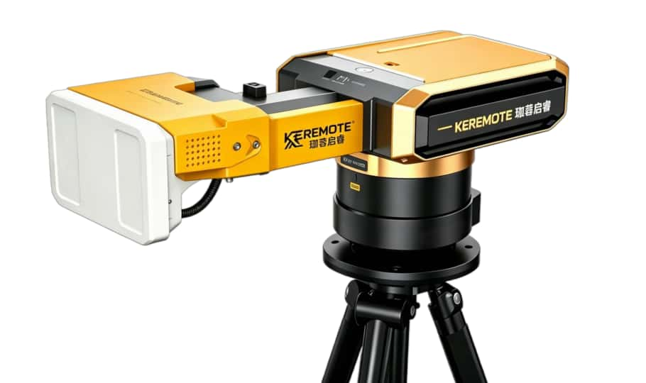
轻小型圆弧合成孔径雷达，360°全方位监测，单人便携，开箱5分钟即可投入使用。
| 参数项 | 参数值 |
|---|---|
| 最大探测距离 | ≥5km |
| 波段 | KU |
| 形变测量精度 | 优于0.1mm |
| 数据更新率 | 优于1次/min（180°） |
| 最大方位扫描 | 360° |
| 俯仰视角范围 | ≥30°（俯仰可调） |
| 雷达功耗 | ≤35W |
| 重量 | ≤10kg |
| 距离分辨率 | ≤0.15m |
| 角度分辨率 | 优于0.4° |
| 供电 | DC 24V（支持市电/太阳能） |
| 防护等级 | IP65 |
| 工作温度 | -40℃～55℃ |
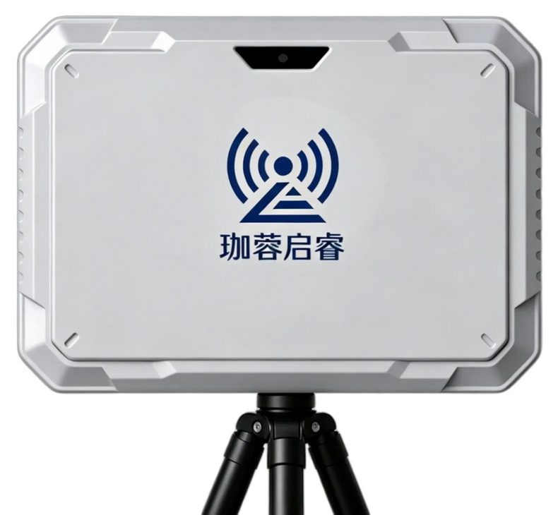
超轻小型雷达，高性价比，适配小型边坡隐患点监测，支持机载大范围作业。
| 参数项 | 参数值 |
|---|---|
| 数据更新时间 | 50Hz，可自定义切换 |
| 波段 | KU |
| 最大探测距离 | ≥ 3 km |
| 距离分辨率 | 0.3 m |
| 天线水平覆盖角度 | ≥ 40°（搭载转台可达360°） |
| 天线俯仰覆盖角度 | ≥ 20° |
| 形变测量精度 | ≤0.1mm |
| 雷达重量 | ≤ 3 kg |
| 整机功耗 | ≤ 10 W |
| 防护等级 | IP66 |
| 工作温度 | -30℃~+55℃ |
| 存储温度 | -40℃~+65℃ |
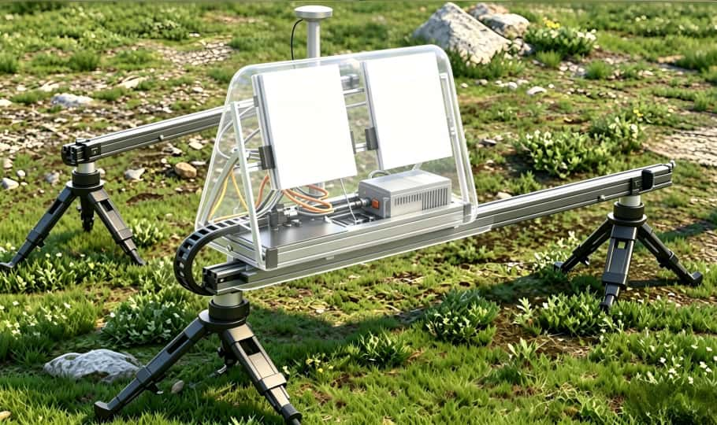
L波段强穿透雷达，适配植被茂密区域边坡监测，支持导轨大范围移动扫描，主机仅2kg。
| 参数项 | 参数值 |
|---|---|
| 频率范围 | 1.2G - 1.4 GHz |
| 中心频率 | 1.325 GHz |
| 中心频率波长 | 22.6 cm |
| 带宽范围 | 50-200 MHz |
| 使用带宽 | 100MHz |
| 距离分辨率 | 1.5 m |
| 方位向分辨率（完整合成孔径） | ≤0.5m |
| 发射功率 | 最大10W（平均5W） |
| 最大功率 | 60W |
| 主机重量 | 2kg |
轻量化设计，适配无人机、汽车、轮船、轨道车等移动平台，毫米级形变测量，整机4-7kg。
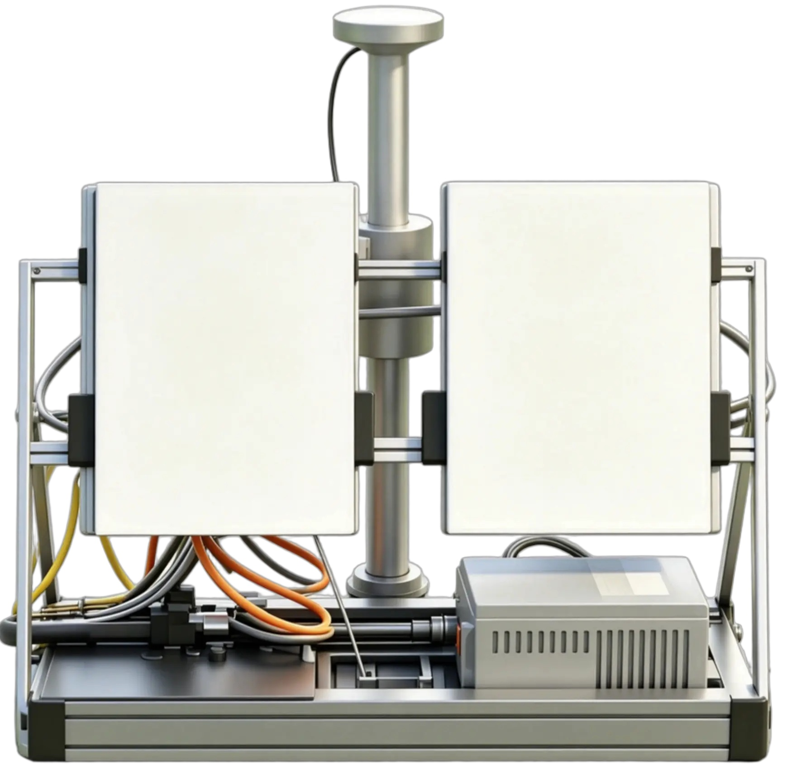
机身仅1kg，整机2-4kg，可搭载移动平台，也可搭配导轨作为地基雷达使用，适配草丛、灌木覆盖区域监测。
澜沧江项目：完成世界首次船载InSAR库岸边坡形变监测，攻克水域岸坡监测行业难题。
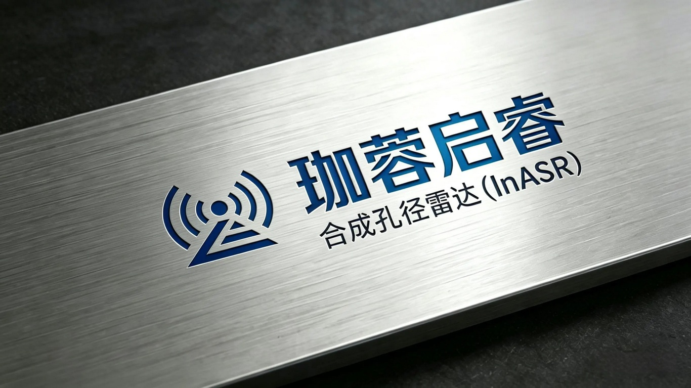
公司秉持技术创新 · 精准可靠 · 客户至上 · 合作共赢的经营理念，持续深耕空天地一体化智能感知领域，聚焦防灾减灾与基础设施安全运维。
依托领先技术、成熟解决方案与专业服务，助力国家防灾减灾体系现代化建设，致力成为国内地质灾害防控智能感知领域标杆企业。